If one looks at several GEM applications of the same category, it soon becomes clear that some programs are easy to use while others can be quite difficult. A text processor such as Papyrus, for instance, will surely present few problems to most users; quite in contrast to programs such as Signum!2, which brings many users out in a sweat!
Whether a program is easy to use depends greatly on the construction of the user interface. This chapter tries to offer some tips on the design of user interfaces, and deals with the following points or aspects:
All software developers are urged to follow the recommendations made here or to orient themselves on typical GEM applications. Besides its functionality, the acceptability of a program (and hence its sales prospects) depend to a large extent on the design of its graphical user interface (GUI).
Examples of errors in GUI design or poor user guidance can be found in http://www.iarchitect.com/mshame.htm.
See also: About the AES About the VDI GDOS
During the construction of dialog boxes a software developer should adhere to both an inner and outer consistecy, i.e. he should orient himself on typical dialog boxes of other programs (outer consistency) and also ensure that within an application the dialog boxes have a uniform appearance (inner consistency).
The following list names some exemplary aspects that should be paid regard to in the design of dialog boxes:
Similar structure of all of an application's dialog boxes
Similar structure of dialog boxes of all applications if
possible
Each dialog should handle a partial task complete in itself
Use uniform buttons for the same actions
Split information into logical blocks
Omit superfluous information
Do not use too many objects on one plane
Clearly differentiate between activating and indicating
elements
Use special effects and colours very sparsely and deliberately
In addition one should think very carefully about which type of dialog is to be used for which purpose. Here one can differentiate between the following dialog types:
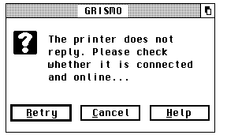
Alert boxes are used to inform the user about important events, or to ask questions that need to be answered. They inform briefly about the state of affairs, and if appropriate offer several alternatives of how to react to them. The above illustration shows an alert box which has been placed in a window to actively support multitasking.
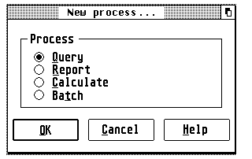
Modal dialog boxes should be used always when the user has to be, or should be, forced to take immediate action. The user can only continue to use the application when he has left the corresponding dialog. The above illustration shows a modal dialog box, which has been placed in a window to actively support multitasking. Modal window-dialogs can be recognized by the user by the missing Closer in the window components.
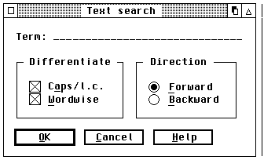
Nonmodal dialog boxes should be used whenever this is possible. Such a dialog exists like a window parallel to the actual program, and offers maximum flexibility to the user. The illustration above shows a nonmodal dialog box, which has been placed in a window to actively support multitasking. Nonmodal window-dialogs can be recognized by the user by the presence of a Closer in the window components.
Important: So that all applications can make unrestricted outputs to the screen at any time in a multitasking environment, it is imperative that all alert and dialog boxes of a program are placed in windows. Some applications (e.g. the resource editor Interface) allows one to switch at any time between conventional dialogs and window-dialogs; however this option should be offered only when it is really necessary. In view of future, or already existing, multitasking-capable TOS versions, conventional dialogs will only play a subordinate role.
See also: About the AES Window-dialogs Forms
With increasing complexity of software there is also an increasing need for active user support with a carefully impemented help system.
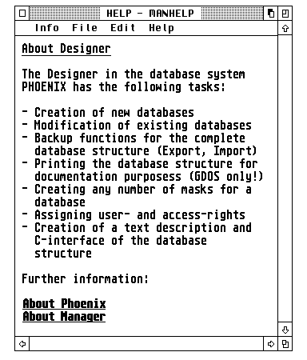
Besides the relief of long-term memory such a system should answer the following four questions for the user:
A very good help system is offered, for instance, by the relational database Phoenix from Application Systems Heidelberg (and there are similar offerings by Pure-C, Grismo, ST-Guide or 1st Guide).
In principle such a system works as follows: The desired information is displayed in a window, and through visually emphasised cross- references a mouse click allows further information for given themes to be obtained at any time. Via a table of contents it is possible to jump to a given theme (as in a book), and an index allows targeted search for a given item of information.
Above all, there is real merit in a context-sensitive help system: This term is understood to cover the provision of helpful explanation referring to the momentary situation.
For instance, if a window or a dialog box is open, then calling the help system brings up an explanatory text for just this window or dialog box.
During the development of a help system for an application the following points should be taken into account:
Every dialog box should contain a 'Help' button, which
when activated makes information about exactly this dialog appear.
Every error message should contain a 'Help' button,
which when activated explains to the user why this error has arisen,
and how it may be remedied
If a window of the application (and no dialog box) is open,
then a help message for this window should be output. In this context
one should note that the functioning of the help system itself must be
explained!
If no windows or dialog boxes are open, and also no objects
(say icons) of the application are selected, then a general help to
the program should be displayed when a suitable menu entry is selected
or the [Help] key is pressed.
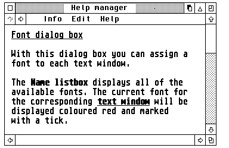
Every help text should contain at least the following information:
To which object does the help refer (window, dialog box or icon
etc.)?
Which actions can be performed on or with this object?
The fear expressed by many software developers that a good help system supports or encourages piracy, though understandable, should not be the reason to punish honest users.
See also: About the AES Window management
Even a relatively unpretentious object as the mouse pointer has an important meaning in a system with a graphical user interface. Both the number of mouse clicks and the shape of the mouse pointer are of particular interest to the user of a program.
It has become customary to assign a given shape to the mouse pointer depending on the operation to be performed; in detail:
| Shape of mouse pointer | Meaning |
| Arrow | General operation (default) |
| Bar or block | Text input |
| Bee or hourglass | The computer is busy with an operation, and |
| the human user cannot do anything during | |
| the execution of this action | |
| Pointing finger | Selection or dimensioning |
| Open hand | Moving or positioning of objects |
| Crosshairs, thin | Drawing or selection |
| Crosshairs, thick | No fixed meaning |
| Crosshairs, outlined | No fixed meaning |
In addition the mouse pointer can be completely switched off as well; this is useful, for instance, when executing drawing operations, to avoid pixel rubbish accumulating. In special cases, the shape of the mouse pointer can also be defined freely; in that case, however, the shape of the mouse pointer should match the current situation.
As a rule of thumb, outside the working area of its own window the mouse pointer should always take the shape of an arrow.
There are some things to report about the number of mouse clicks as well. A single-click generally serves to select certain elements. These can be elements of a dialog box (checkbox, radio button, etc.), icons on the desktop of a shell, and also the components of a window. In many cases a single-click can also trigger further actions. For example, if the mouse button is held down, then objects such as icons or windows can be dragged to another location, or it is possible to select a whole group of objects.
A double-click usually initiates a special operation; the desktop, for instance, launches a program if its associated icon is double- clicked on.
In principle, besides single- and double-clicks of the mouse, there are also triple- or quadruple-clicks available. But it is strongly recommended to avoid these variants, as many people might have major problems performing the corresponding number of mouse clicks in a given time interval.
Last but not least one can use mouse clicks also in associationg with the keyboard ([Alternate], [Control], [Shift]): A mouse click in combination with a [Shift] key generally ensures that further objects can be selected. In the shell Gemini, double-clicking on an icon while holding down the [Alternate] key opens a window containing the directory belonging to this icon. With the alternative desktop Thing, holding down [Alternate] while double-clicking on a desktop icon of an application or file (but not a drive or folder) again opens the window of the relevant directory, with the entry matching the icon preselected (inverse video).
See also: graf_mouse
To a large extent, the design of the menus is responsible for the clarity and user-friendliness of an application. Therefore every software developer should take enough time to create these in a sensible and appealing manner.
As already mentioned, the capacity of short-term memory is restricted. For this reason a menu bar should not offer more than seven menu entries, if possible; otherwise the user has to glance at the menu bar several times to be able to decide what he wants to select. The following illustration shows the main menu bar of the relational database system Phoenix in its English version:
MANAGER File Edit Process Report Parameters Options Help
Both the menu bar as well as the menus contained in it should have a standard make-up, so that the user feels 'at home' immediately after the launch of a program. The first menu from the left should always carry the name of the current application; this has the inestimable advantage in a multitasking environment of being able to identify the active application immediately by a quick glance at the menu bar.
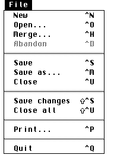
The second menu title should always be named File, and offer menu entries that deal with various aspects of input and output. The lowest entry of this menu should always offer the option of quitting the program.
As one can see in the above illustration, individual entries within a menu can be collected together in logical subgroups separated by fixed or dashed lines, which contributes greatly to clarity and acceptance by the user.
Note: In assigning shortcuts in menus, take care not to duplicate any of them in the complete set of menu entries and also within any of the non-modal dialogs. Furthermore, avoid using accented characters, since these may not be present on keyboards used in countries other than that of the original programmer (Example: Umlauts [Ä], [Ö], [Ü] and [ß] are only present on German keyboards, and similar restrictions apply for French, Spanish or Swedish etc.)
Also remember that while [Control] combinations will use a modified ASCII-code of the character key to execute the menu event, [Alternate] combinations cannot do this and have to use the scancode; however, the keyboard layouts in some countries differ in a few keys (for instance, the [Y] and [Z] keys are transposed in English and German-language keyboards, and the French ones have other differences). It may thus be impossible to use some of these characters together with [Alternate] successfully as shortcuts in many programs when run on keyboards in languages other than that of the programmer without changing and then recompiling the program source. Just changing the shortcut in the RSC file or program file will not work!
Three dots following a menu entry indicate that after selecting this entry a dialog box (or file-selector) will open; the user can then attune himself to this, and move the mouse pointer to the middle of the screen, for instance, while the dialog is built up.
Further frequently used menu titles are Edit, Parameters, Options and Help. The first should always lie to the right of the File menu, the last should always be placed at the right end of the menu bar.
Each title should start with a capital (upper case) letter (the name of the program at far left should always be completely in capitals), consist of a single word only, and as demarcation to other titles always have a space character to both its left and right.
In addition, menu entries should always have a context-sensitive configuration, i.e. an entry may only be selectable if this is possible or sensible at the current situation of the program. Thus, say, there is no point of calling the menu entry Save when there is nothing to be saved. The same applies for an entry Close, which should be selectable only if a window or a dialog exists that can be closed. Such non-selectable menu entries should be displayed 'greyed out' (in light type).
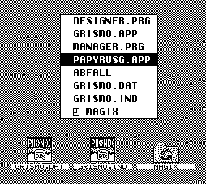
Apart from the conventional menu bar, some further and interesting possibilities exist to allow the user to make selections. Thus many programs (e.g. the shells Thing or Ease - see illustration above) make popup-menus available to the user to facilitate fast selection between various alternatives or perform an operation.
The main advantage of a popup menu lies in shortening mouse movements. The menu simply appears at the screen position where the mouse click was performed (usually with the right mouse button). In implementing popup-menus one should ensure that these always appear complete on the screen (long popup-menus can often be scrolled).
Last but not least there is the possibility to place a menu bar in a window. This method offers many advantages: First of all the main menu bar can be relieved in this way and so allow a much clearer layout, secondly it makes possible building up an application in a much more logical way; all operations affecting a given window wander into the window menu, all others into the global menu bar.
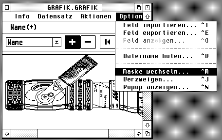
As one can not only move windows on the screen but, generally, also change their size, it is possible that not all titles of a window menu are visible. Hence some programs allow the menu bar to be scrolled. This applies, for instance, to the text editor Grismo or the resource editor Interface.
See also: About the AES Menu library
When working with a computer, the human user is dependent on visual or acoustic feedback to retain the feeling at all times of being in control of the task being perfomed, or being able to grasp the current state of the process.
GEM offers a multitude of possibilities for procuring a sense of feedback to the user. Thus, for instance, menu titles or icons are displayed in inverse video when the user selects them with the mouse.
Acoustic feedback is particularly useful in connection with error or alert messages, which can be displayed in dialog boxes.
Visual feedback should be used always when the user selects objects on the screen, or initiates a task with a long processing phase. The user may never be left uncertain which operation is being performed at the time, and how far this has progressed.
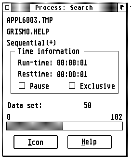
Graphical displays (such as an advancing progress-bar shown in the above illustration, for instance) are to be preferred to textual ones for this, as the latter first has to be 'decoded' by the user.
Visual feedback is provided, for instance, by the relational database system Phoenix, to inform the user of the state of the inquiry; the shell Gemini (and many other programs) use this method to show the user how the formatting of floppy disks is progressing, and the text editor Grismo, amongst others, inverts the cross-references of its help system when the user activates them with the mouse.
See also: About the AES Style guidelines
'Selection' is understood to be the choosing of one or more objects. On the desktop, for instance, one can select the files in a drive window with a mouse click, [Shift]-mouse click or by drawing up a rubber band box.
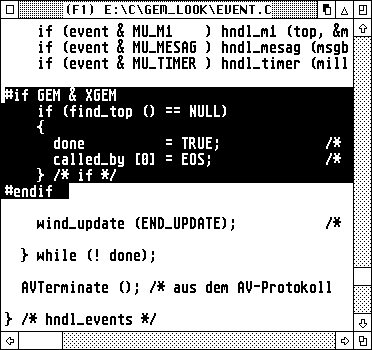
Basically the following conventions apply on the desktop:
Mouse click: A single left-click with the mouse selects the object clicked on; objects that are already selected must be deselected again by this action.
[Shift]-mouse click: This adds the selected object to the set of already selected objects (so previously selected objects will remain selected). A [Shift]-mouse click on a selected object removes this from the set of selected objects again.
Rubber band: By drawing out a rubber band box (left-click at the start of the area to be selected and holding the button down drag the mouse pointer to the end-point), all objects enclosed by this band will be selected; any objects already selected must be deselected again by this action. In combination with the [Shift] key the affected objects can be added to the set of selected objects.
A very useful type of selection is the so-called realtime selection. This describes a procedure under which the selected area is inverted already during the movement of the mouse pointer. Many programs such as Pure-C, Gemini, Everest or Grismo use this method of selection, and even scroll the contents of the window automatically when the edge of the window is reached.
See also: About the AES Style guidelines
Particular care is required for using colours, text attributes etc. Usually the motto Less is more! applies here.
One cannot provide here a patent recipe, but only the suggestion that one should orient oneself on examplary application models.
Particularly when using colours, software developers should keep at the back of their minds that human colour sense is very subjective; from this follows that it should be possible for the user to set the colours in a way he finds agreeable.
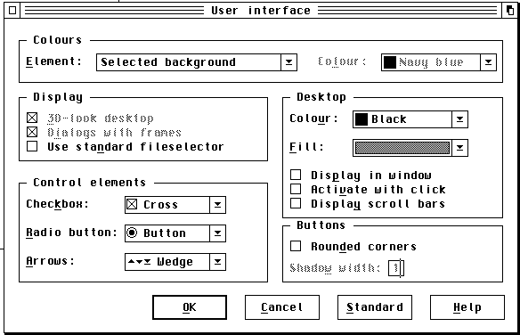
An exemplary application in this respect is the relational database system Phoenix by Application Systems Heidelberg, for instance, which is illustrated above. Here the user can configure freely almost every aspect of the user interface.
In text documents one should take care not to use too many, or mixed text attributes (effects such as bold, italic, underscored, shadowed, light or outlined etc.) at the same time. Here too the motto Less is more! applies. But this statement cannot be applied across the board: There are cases where the use of several attributes at a time can not just be tolerated, but is recommended. In a hypertext system, for instance, the cross-references must be made particularly clear to the user. On nearly all platforms it is standard to display these cross- references underscored, and if possible also in colour. This has the advantage that text passages that use a simple attribute can still be differentiated from the cross-references.
Absence of a patent recipe leads to uncertainty in many developers which culminates in forgoing special effects or colours completely. But that missess the whole point! Colour, sensibly used, can not just increase clarity appreciably, but also drastically increase an appli cation's attractiveness. However, developers should also keep in mind that some users may be working in 2-colour (monochrome) resolutions and ensure that their program is still usable under those conditions.
To sum up: Special effects (of whatever kind) should be used in a premeditated and sparse manner.
During the development of a software product the programmer would do well to include a typical user as soon as possible in his work (user- testing), and to orient himself on model programs. The most sensible thing is to make all ticklish points freely configurable by the user!
See also: About the AES Style guidelines
As people are creatures of habit, it is desirable that not just the dialogs and menus are built up in a consistent manner, but also that the most important functions of a program can be operated consistenty from the keyboard.
Actually there are a number of command-key combinations (shortcuts) that are either standardized, or which have established themselves as quasi (accepted) standards; in detail:
Standardized according to decisions of the developers conference in August '89:
| Key combination | Function |
| [Control]-[C] | Copy |
| [Control]-[F] | Find |
| [Control]-[O] | Open |
| [Control]-[Q] | Quit program |
| [Control]-[V] | Paste |
| [Control]-[X] | Cut |
| [Shift]-Upward arrow | Go one page back |
| [Shift]-Downward arrow | Go one page forward |
| [Shift]-Leftward arrow | Cursor to start of line |
| [Shift]-Rightward arrow | Cursor to end of line |
| [Control]-Leftward arrow | Move back by one word |
| [Control]-Rightward arrow | Move forward by one word |
| [ClrHome] | Go to the start of the document |
| [Shift]-[ClrHome] | Go to the end of the document |
Not standardized, but accepted as standard in practice:
| Key combination | Function |
| [Control]-[A] | Select all |
| [Control]-[G] | Find next |
| [Control]-[M] | Save as... |
| [Control]-[N] | New document |
| [Control]-[P] | |
| [Control]-[S] | Save |
| [Control]-[R] | Replace |
| [Control]-[U] | Close top window |
| [Control]-[W] | Cycle to next window |
| [Control]-[Y] | Cut current line |
| [Control]-[Z] | Start shell |
Important note: All '[Alternate]-[Control]' key combinations are reserved for the operating system. As examples one can name here:
| Key combination | Function |
| [Alternate]-[Control]-[Tab] | Task change under MagiC |
| [Alternate]-[Control]-[Delete] | Start Shutdown sequence |
| [Alternate]-[Control]-[Esc] | Program manager under MagiC |
| [Alternate]-[Control]-[Space] | Iconify current window |
| [Shift]-[Alternate]-[Control]-[Space] | Iconify application |
Note that shortcuts must not be duplicated within a menu structure or a dialog, and some keyboard shortcuts can give rise to problems when the application is run with a keyboard of a different nationality to that used by the programmer. This is due to both the absence of some characters on a keyboard as well as to different keyboard layouts; the latter may affect [Alternate] combinations in particular.
See also: Operation of the file-selector ASCII table Scancode table
In some cases there is not enough room in an application's menu bar or dialog boxes to accomodate all of the functions.
Instead of overfilling the menu bar or squeezing too much information into a dialog, one should fall back in such cases to a toolbox or a local menu bar in windows.
In nearly all cases this allows the corresponding functions to be housed in the user interface - and in a clear manner into the bargain.
Toolboxes are generally offered at the top or right edge of a window, but can also be movable.
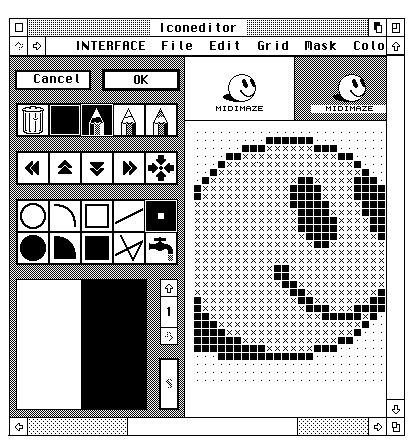
Local menu bars and toolboxes are utilized by the resource editor Interface, for instance, shown above. It can be useful if a toolbox can be hidden temporarily, in order to be able to show the actually more important information in the window; this is permitted by the text editor Grismo, for instance.
See also: About the AES Style guidelines